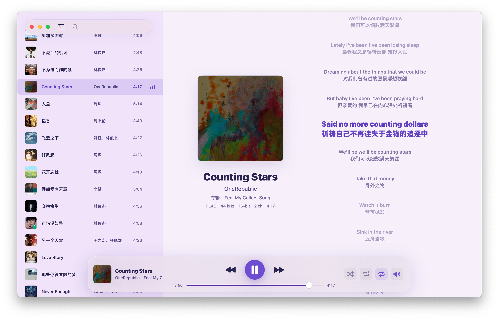
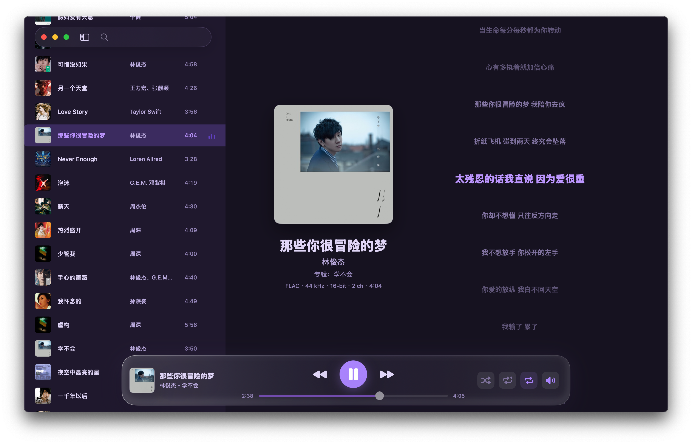

Light Mode

Dark Mode

就是为本地音乐而生
轻量、干净，一个称职的 macOS 音乐伴侣
原生视觉体验
贴近 macOS 桌面应用规范。浅色清透，深色深邃，柔和的强调色点缀其间，绝不喧宾夺主。
纯粹播放逻辑
支持快速搜索，提供随机、单曲循环和列表循环。把最基础但也最重要的听歌体验做到极致。
尊重本地习惯
专为本地音乐库设计，不强迫改变文件归类习惯，不擅自搬运音频，完美契合你的本地归类方式。
内建信息编辑
可编辑封面、歌曲名、歌手、专辑等音乐信息，并同步更新本地文件，让本地库时刻保持整洁。
管理你的音乐信息
支持修改歌曲封面、歌曲名、歌手与专辑信息，让本地音乐库保持整洁
Edit Info - Light

Edit Info - Dark

同名歌词，自动浮现
如果你习惯精心整理自己的曲库，zihusic 是你的最佳选择。只需将歌词放在音频旁边并保持同名，它就能自动读取展示。
00:41 夜色慢慢落进播放列表
00:46 当前歌词在这里闪烁发光
00:52 封面、曲名和专辑刚好在旁边
目录结构示例：
/Music
├── Song.flac
├── Song.ass
├── Track.mp3
└── Track.lrc
把 zihusic 放进 Applications
下载、解压、拖入应用程序，然后开始享受纯粹的音乐时光
立刻下载体验